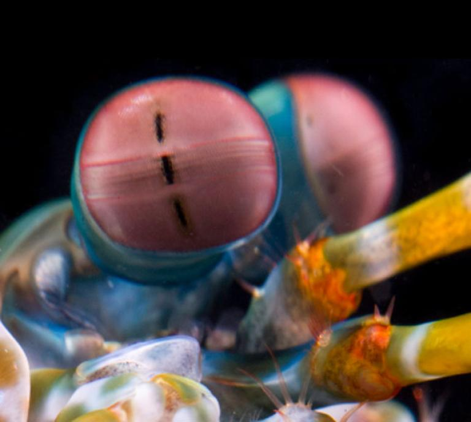

Fatos sobre o Stomatopoda
Que bicho é esse?
Stomatopoda (ou estomatópode), chamados popularmente de tamarutacas ou de lacraias-do-mar no Brasil, é uma ordem de crustáceos marinhos da subclasse Hoplocarida, que agrupa cerca de 400 espécies, caracterizadas principalmente pela morfologia da segunda pata torácica, que é modificada em apêndice subquelado, lembrando uma pata de louva-a-deus.
Como existem muitas espécies, vamos falar de uma espécie em específico, o camarão-louva-a-deus-palhaço (Odontodactylus scyllarus), mas antes, temos uma tabela com a classificação científica da Stomatopoda.
| Reino | Filo | Subfilo | Classe | Subclasse | Ordem |
|---|---|---|---|---|---|
| Animalia | Arthropoda | Crustacea | Malacostraca | Hoplocarida | Stomatopoda |
Esqueçam as águias, aqui se enxerga melhor
Esses animais possuem o mais complexo sistema de visão de cores do mundo animal, porque eles podem ver 16 cores primárias, por possuírem 16 pigmentos diferentes em sua retina.
Para efeito de comparação, nossos olhos possuem três tipos desses receptores - que respondem à luz azul, verde e vermelha -, que nos permitem perceber o espectro de cores que vemos. Os cães contam com apenas dois tipos de cones (verde e azul), e é por isso que eles vêm tons de azul, verde e um pouco de amarelo. Muitos anfíbios, répteis, aves e insetos possuem quatro tipos de cones, o que significa que espécies dessas classes conseguem ver cores que o nosso cérebro é incapaz de processar. Algumas espécies específicas de borboletas e possivelmente pombos possuem cinco cones de percepção de cor, o que aumenta ainda mais a quantidade de pigmentos que eles são capazes de perceber. O sistema de visão dos estomatópodes possui doze cones sensíveis à luz e outros quatro que filtram a luz (16 cones no total), o que lhes permite ver cores polarizadas e imagens multiespectrais.
Como cada cone pode ver cerca de 100 cores, os estomatópodes são capazes de ver 1024 cores, ou seja, 1 septilhão de cores. Em comparação, o olho humano vê 106 cores, ou seja, 1 milhão de cores apenas. A visão dos estomatópodes é sensível à luz ultravioleta, mas ainda é desconhecido se ela pode distinguir a luz infravermelha.

Foto (em tamanho aumentado) dos olhos mais incríveis da natureza.
Discípulo de Maçaranduba e Montanha
Assim como os personagens do extinto Casseta e Planeta, Carlos Maçaranduba e Ulson Montanha, esses animais não tem problemas em partir para a PORRADA!
Os animais dessa espécie são capazes de desferir um dos mais rápidos e violentos golpes do reino animal, um soco que pode apresentar a velocidade de um tiro calibre .22 (equivalente a 720km/h) e uma força de impacto de 60 kg/cm². Essa força esmagadora é a responsável pelo seu título de "lagosta-boxeadora" e é capaz de facilmente quebrar a carapaça de um caranguejo, as conchas duras e calcificadas de gastrópodes ou até mesmo quebrar o vidro reforçado de um aquário.